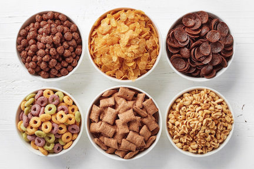

Cereal

Your Favorite Cereal!
Your favorite cereal, prepared exactly how you love it!
Ingredients:
Your prefered cereal
Milk
Bowl and spoon
Steps:
Fill bowl with your prefered cereal.
add milk and desired.
Enjoy!